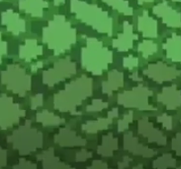
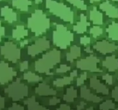

The
Maze project
Introduction :
Welcome to the Maze Game Project! This innovative project aims to create a 3D maze game using SDL2 (Simple DirectMedia Layer) and raycasting techniques. By transforming a 2D map into a fully navigable 3D world, you'll experience the thrill of exploring intricate corridors and finding your way to the maze's end. This project not only showcases the power of raycasting for rendering 3D graphics but also offers an immersive and challenging gameplay experience in a dynamic maze environment
Team Members :
hajar makriniPurpose of the Project
The purpose of this project is to explore game development, inspired by my love for gaming. I wanted to understand how games are made and develop professional skills in this area. By creating this 3D maze game using SDL2 and raycasting, I aimed to learn the basic concepts and techniques needed to turn a 2D map into a 3D world that players can exploreChallenge
The most challenging part of developing my 3D maze game was implementing raycasting to transform a 2D map into a 3D world. Raycasting works by sending out rays from the player's perspective, which travel through the maze and detect walls and obstacles. These rays help calculate distances and angles, creating the illusion of depth and rendering the 3D scene on the screen. This process was technically demanding, requiring precise calculations and efficient coding to achieve smooth and realistic graphics.
Color and Texture:
Differentiates elements with varied colors and textures, enhancing visual clarity and atmospheric immersion.

 

Technologies Used and Reasons for Choice
- SDL2 (Simple DirectMedia Layer): We chose SDL2 because it supports multimedia like graphics, audio, and input handling. SDL2 is versatile and performs well, making it a favorite for game developers. download
- C Programming Language:We picked C for its performance and control over system resources, which are important in game development. Learning C also helped build a strong foundation in programming basics and low-level memory management.
- Raycasting: We used raycasting to create the 3D environment from a 2D map. It's a classic method in game development that makes 3D effects in a 2D space, providing efficient and appealing graphics..
- Git:Git was used for version control to manage the project's codebase. It made it easy to track changes, collaborate (if needed), and keep a history of the project's development.
- Makefile:The Makefile was used to automate the build process, ensuring the project compiled consistently and efficiently, reducing manual errors and simplifying the development workflow.
Game Mechanics
- Player Control: Enables precise camera (player) movement and rotation through keyboard inputs, ensuring responsive and immersive gameplay.
- Collision Detection: Implements robust collision detection to prevent player movement through walls, with potential sliding mechanics for realistic interactions.
- Interaction Feedback: Provides visual and auditory cues for player actions, enhancing immersion and gameplay responsiveness.
Map Design
- Map Parsing: Incorporates a parser to read map data from files, defining wall placements and open spaces using specific characters, allowing for dynamic and customizable level design.
- Map Rendering: Renders parsed maps directly onto the game window, updating in real-time based on player movement and line of sight, facilitating navigation and strategic planning.
Development Requirements
- Platform and Compilation: Developed on Ubuntu 14.04 LTS using gcc and g++ with specific compiler flags (-Wall -Werror -Wextra -pedantic), ensuring robust and cross-compatible code in both C and C++.
Installation
$ git clone https://github.com/hajarMakrini/mazeGame.gitUsage
Execute ./maze or type make runUse up and down arrow keys to move forward and backward (keys w and s serve the same function).
Use right and left arrow keys to turn the camera around (keys d and a serve the same function).
GitHub Repository
Check out my 3D maze game project on GitHub: GitHub Repository
I would be happy to hear your thoughts! Feel free to contact me: